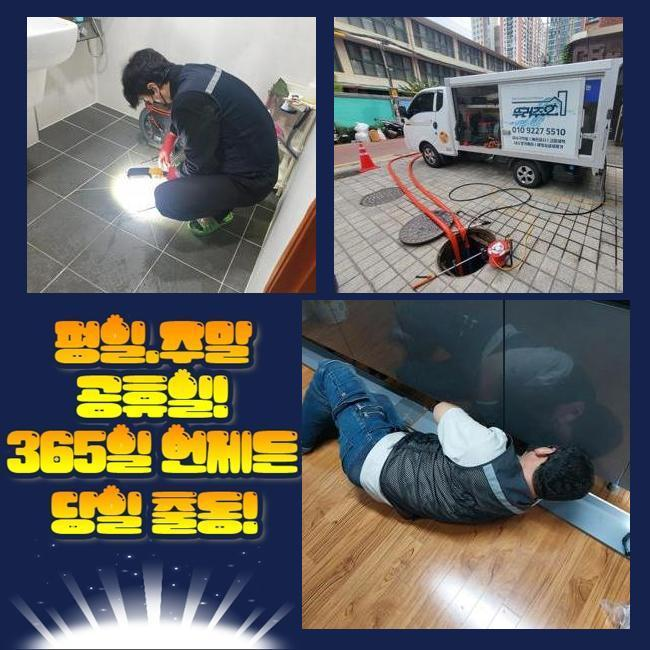
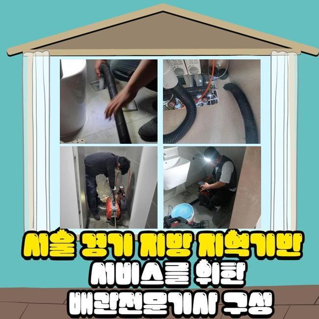
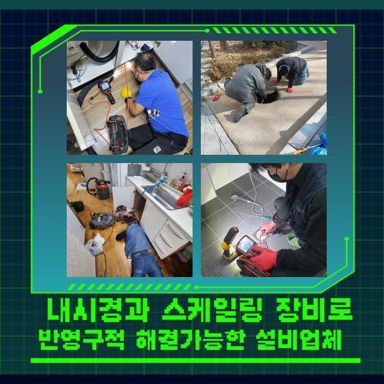
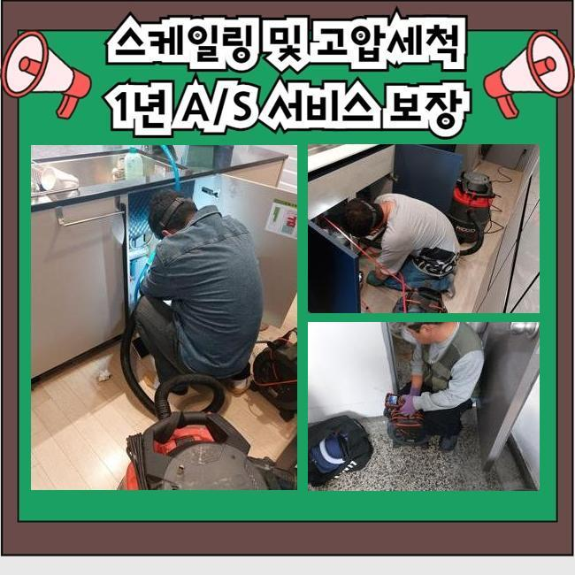
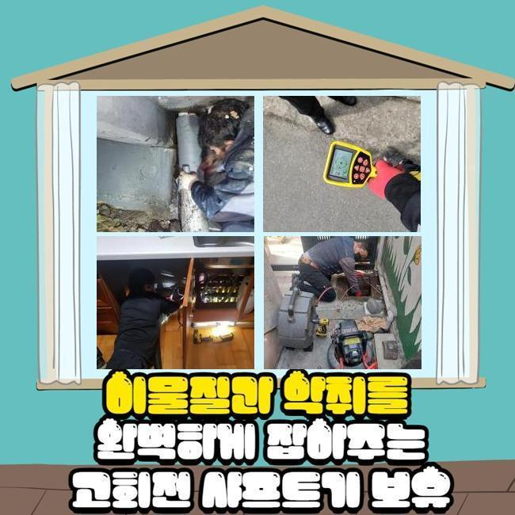
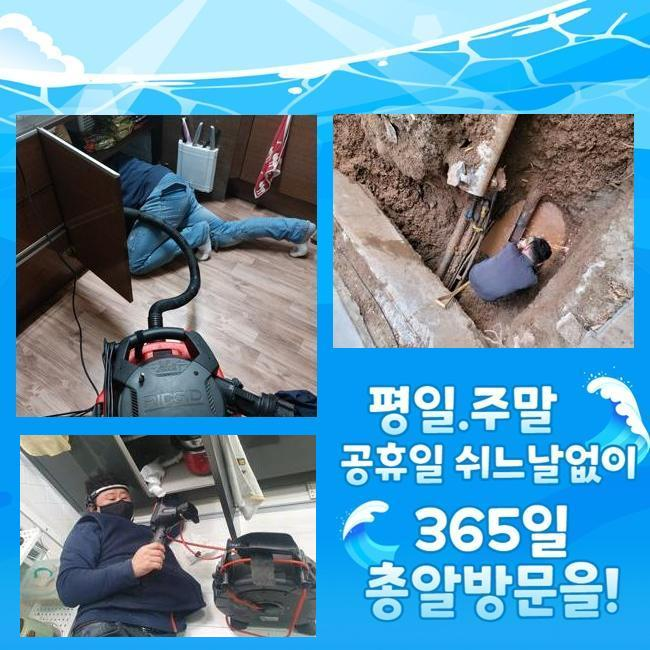
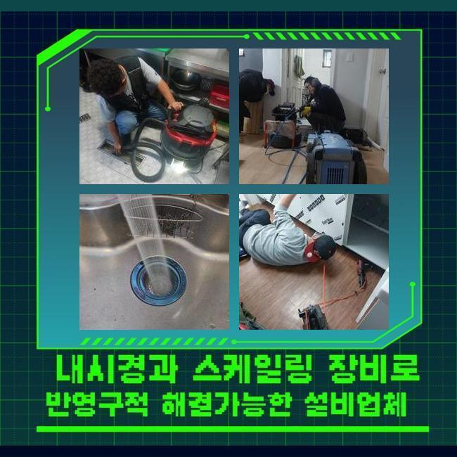

🏠 수원 연무동씽크대막힘 정자3동 하수구뚫는업체 배관전문
수원 싱크대막힘 전문 시공 후기

📋 작업 개요
- 위치: 수원
- 서비스 유형: 싱크대막힘, 하수구막힘, 배관막힘, 뚫는업체, 배관청소, 고압세척
- 작업 일시: 2025. 1. 14. 10:11
- 업체명: 하수구수사대 (010-5615-2118)
🔍 문제 상황
수원 연무동씽크대막힘 정자3동 하수구뚫는업체 배관전문
상업적인 건물 내부에서 하수의 범람이 발생했음을 듣고서 조사하고 고쳐드리기 위해서 막힘이 생긴 곳으로 가봤습니다
규모가 꽤 되는 건물이면 건물에 깔려있는 모든 파이프들이 결국 모이게 되는 모습을 갖추고 있는 장소들이 많습니다
어떠한 구간에서 문제점이 생겼다면 또다른 배수로도 고장이 나서 다수의 세대에서 불편을 감당해야 할 수 있습니다
오늘 이야기할 하수구 설치장소는 많은 점포들이 운영되고 있던 상가였는데 예기치 않게 찾아온 하수구 곤란으로 정상 운영에 문제가 생겨서 당장의 비용적인 리스크도 호소하는 상태였어요
건물 내에서 하수설비에 대한 장애가 반복적으로 유발될 시에는 여러가지 불편함을 끼칠 위험이 있으므로 의뢰받는 즉시로 현장에 찾아가고 있습니다
주소지에 도달하면 그중에서도 피해가 제일 극심한 장소로 가서 유속이 얼마나 느려졌는지 확인해봐요
통수검사의 경우는 수돗물을 수압이 강하게 내린 다음 배관 아래로 이 수돗물이 어떠한 속도로 빠져나가나 추산하여 문제의 심각도를 추론합니다
통수되는 속도도 심각하게 다운된 것이 보였으며 툭툭 멈추는 현상이 문득문득 스쳐간다는 사실을 몸소 깨닫게 되었습니다
종합적인 막힘의 문제들이 촉발된다는 걸 미뤄보자면 배관 내측에 다량의 고착물들이 부착되어 있을 상황임이 추정되었습니다

🔎 원인 분석
💡 전문가 진단: 정밀 진단 장비를 사용하여 슬러지의 고착 여부를 판명하고 타격/세척 작업을 실시했습니다.
누적된 오염물질을 올바르게 소강시키지 못할 경우에는 근방의 배관들까지 오염이 옮겨져 갈 위험이 있으니 과정 간의 텀을 줄였습니다
하수구 장애를 초래하는 원인들은 배관 직경을 메운 찌꺼기가 유력하므로 다 체크해서 정화를 해줘야 제기능으로 돌아갑니다
수돗물을 실내에서 틀게 되면 누적물이 쌓이게 되는데 배수구 구멍을 통해서 바깥으로 나가는 동안에 한 파트에 접착돼서 심각한 장애물으로 전락합니다
의도적으로 고형화된 물질들을 내버리는 게 아니라도 수돗물 안의 석회질과 미네랄이 딱딱하게 굳곤 합니다
내측 현황을 탐방해보니 유분막과 머리카락처럼 비수용성의 물질들이 한껏 엉켜있었습니다
조금씩 부피를 불려나가다가 장기화되면서 틈도 없이 붙어버리면 쉽게 제거되지 않을 수 있습니다
통로를 꽉 채운다면 더러운 물의 역행까지 피할 수 없게 되는 힘든 케이스로 진행될 수 있습니다
이물질은 물과 닿으면 부패속도가 빨라질 경우가 상당히 많고 곰팡이와도 결합되다보니 냄새가 같이 올라와서 고정적인 집냄새가 되어버립니다
보통 하수가 이동하는 배관은 습도가 매우 높게 유지되니 오물도 더 빨리 썩어가며 악취까지 곳곳에 배이게 됩니다
노폐물이 누적된 위치들이 한 두군데가 아닐 수 있어서 전체적인 점검이 필수입니다
일부 구간만 장애가 생겼다면 흡입을 돕는 석션만으로도 뚫는 게 가능할 수 있는데요

🔧 작업 과정
배배 꼬여있는 상태거나 연결 구간이 많다보면 막힘을 야기하는 부분이 은근 많다고 느껴질 것입니다
배관의 모양이나 이물질의 견고함과 크기를 관찰하여 인식해야 합니다
연거푸 물을 붓더라도 물의 흐름이 재생되지 못하면 일정 수치 이상으로 부피가 불어났거나 강한 화석처럼 변성됐을 겁니다
초기를 넘어선 막힘건을 타개하고자 한다면 배수장애를 유발한 대상을 찾아서 정화하는 작업이 필요합니다
오물이 단단한지 여부같은 상황에 대한 변별력이 있어야만 무슨 장비를 쓸지 정할 수 있습니다
배관에 특화된 카메라 장치는 육안으로 인식하기 힘든 곳까지 현재 상황에 대해 알려주는 도구로써 찌꺼기가 붙은 지역과 오염원을 어떻게 처리하면 좋을지를 체크할 수 있게 기반을 마련합니다
시공 중에 카메라를 써서 체크하면 작업이 문제 없이 진행되고 있는지 수시로 검사할 수 있어서 하수구 안을 더 맑게 만들 수 있습니다
문제가 빚어진 배관 안의 모양을 가늠하기 위해서 혹은 끝맺음을 하기 전에 마무리 상태를 재검토하기 위한 목적으로 카메라를 활용합니다
관로를 따라 곳곳을 확인해보니 메인관로는 당연하고 인접한 파이프까지도 이 노폐물들이 딱 달라붙어있는 것을 몸소 깨닫게 되었습니다
단순 막힘은 전동의 힘을 기반으로 움직이는 스프링이나 플렉스샤프트를 접목해서 이물질을 긁고 잘라내서 막힘을 풀어나갈 수도 있는데요
규모가 큰 옥외 설비의 넓은 범위로 퍼져서 오염원이 자리를 잡았으면 중소형 장비로는 효과를 볼 수 없을 것입니다
구간이 넓으니 그 공간에 쌓인 이물질도 많이 쌓일테니 석션에 달린 집수통의 용량으로는 감당이 불가하게 됩니다
청소할 장소가 광활할 시에는 강력한 파워를 지닌 고압세척기로 진행하는 것도 또 하나의 방법입니다
여러 장소에 접목할 수 있으며 구경에 배치하기 좋은 노즐을 끼운 채 물을 쏘게 되는 방법이며 이미 단단해진 고착물이라도 탈거시켜줍니다
공간에 있는 배관들은 노후됐다면 더 약해지므로 현장에 적합한 세기를 여러 단서를 보고 정하고 작업해요
하수구 안을 고쳐주기 전에 배관의 상세 컨디션도 꼼꼼히 숙지를 해주고 본 시공에 들어갑니다
장소마다 강도 조절을 하면서 마치 마라톤하듯 배관 청소를 임하면서 통수장애를 만들 정도로 빈 틈도 없이 막아서고 있었던 노폐물들을 맑고 상쾌하게 덜어낼 수 있었어요


✅ 작업 완료
마무리 단계로 모든 이물이 다 사라졌는지 다시금 검토하면 본연의 하수구 기능을 회복시키는 모든 단계가 끝납니다
막히는 기색없이 흘러가는지 통수 검사도 눈앞에서 해드리고 그밖의 의문점이 있다면 답해드리고 사용법도 알려드립니다
외양이 깔끔한지도 체크하고 정상적인 이용이 바로 가능할 것인지 끝까지 신중을 기하고 있습니다
많은 탁월한 장치의 힘으로 하자가 발생하지 않도록 하수구의 불능 사태를 처리해 드린다고 약속드립니다
고객님 댁의 하수에 대해서 상담이 필요하시다면 시간 상관없이 연락 부탁드립니다!




⚠️ 주방 싱크대 배관 막힘 예방 수칙
- ✅ 기름기가 묻은 식기나 프라이팬은 설거지 전 키친타올로 반드시 기름때를 닦아내세요.
- ✅ 주기적으로 싱크대 개수대에 뜨거운 물을 가득 받아 한 번에 내려 배관 내부 기름을 씻어내세요.
- ✅ 배수구 거름망을 미세한 필터로 사용하시고 음식물 찌꺼기가 틈으로 새어 들지 않게 관리하세요.
- ✅ 베이킹소다와 식초를 뜨거운 물과 함께 일주일에 한 번씩 부어주면 배관 살균과 막힘 예방에 좋습니다.
💡 핵심 정리
- 확실한 장비 작업(내시경 점검 및 샤프트 스케일링)으로 원인을 뿌리 뽑습니다.
- 작업 후 1년 이내에 동일한 부위 재발 시 100% 무상 A/S 서비스를 보장합니다.
- 서울 · 경기 · 인천 전 지역에 24시간 언제든 긴급 출동할 수 있도록 항시 대기 중입니다.
❓ 자주 묻는 질문 (FAQ)
🚨 수원 싱크대막힘 문제로 고민이신가요?
정확한 원인 진단과 확실한 시공으로 재발 없는 해결을 약속드립니다.
24시간 긴급 출동 | 서울 · 경기 · 인천 전지역 | 1년 내 재발 시 무상 A/S